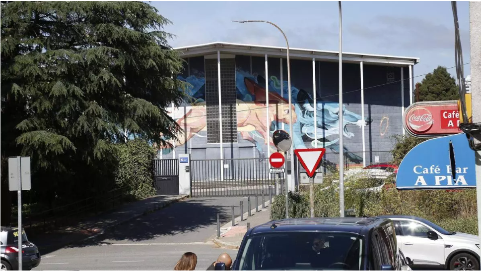
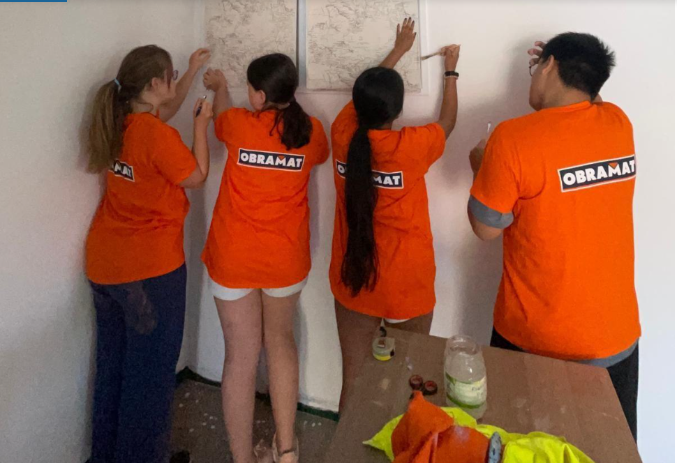
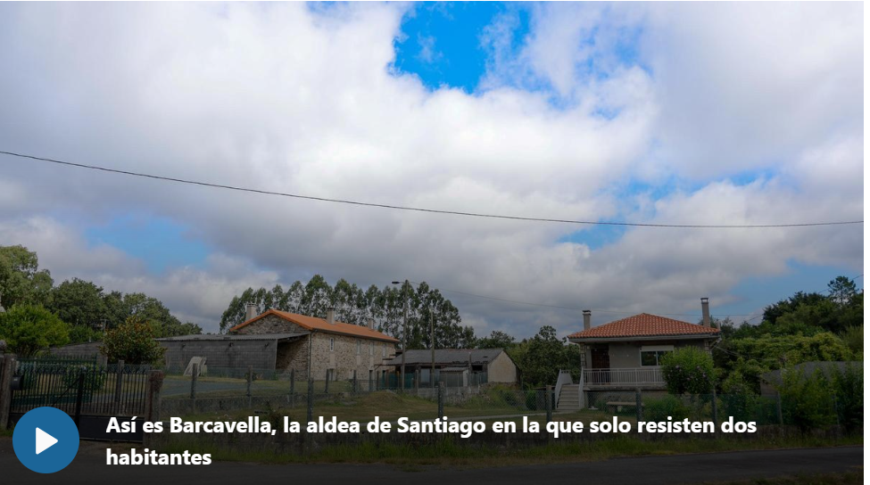
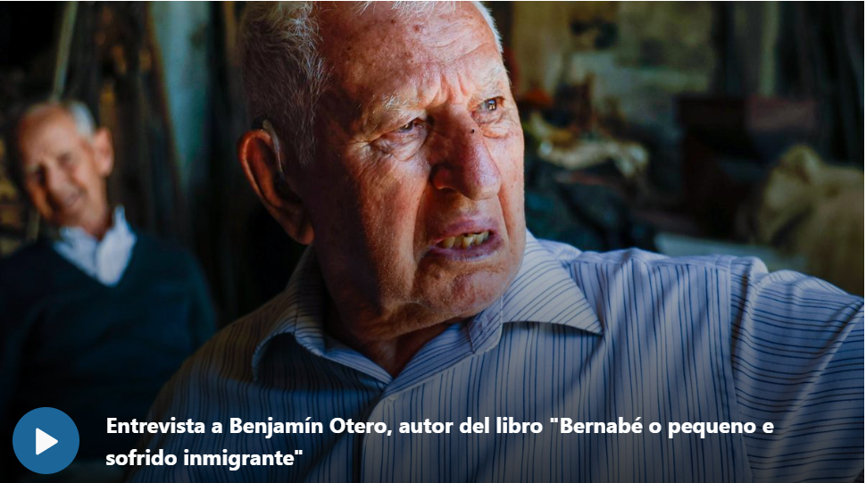

Mis noticias
-
Los peregrinos no perciben turismofobia en Santiago: "La gente es amable con nosotros"
21 de agosto de 2024
-
Cuatro constructoras gallegas y una vasca son las candidatas para reformar el IES Eduardo Pondal

8 de agosto de 2024
-
Asociación Xera: "Queremos que este campo de voluntariado sea un lugar donde los jóvenes se sientan a gusto"

21 de agosto de 2024
-
Desde uno de los animales más peligrosos hasta un meteorito: algunas de las piezas expuestas en el Museo de Historia Natural
11 de agosto de 2024
-
Barcavella, la aldea de Santiago en la que solo resisten dos habitantes

25 de agosto de 2024
-
Benjamín Otero, o veciño de Nemenzo que relata a emigración

28 de julio de 2024